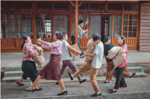
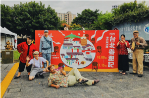

慾望作品｜Works
首頁
Home
最新消息
News
慾望成員
Team
慾望作品
Works
聯絡慾望
contact
歷
年
作
品
基隆時空漫遊指南
《金爍爍的海水浴》
2020新北市眷村文化節
眷味召集令
《永遠的家鄉味》
2020台北眷遊記
《眷村話家常》
基隆時空漫遊指南
《金爍爍的海水浴》

演出歷程
2020年
10/31（六）14:00/15:00/16:00
你知道基隆曾經有全台灣最熱鬧的海水浴場嗎？
一百多年前的日治時期
有一座「大沙灣海水浴場」
就座落於現在的基隆港9-15號碼頭
那時候，自全台各地的人們
都爭相來玩水游泳、搭船觀光、做日光浴
有餐廳、有小販、有水上滑梯跟跳台、還有休憩室
後來為了發展經濟，需要擴建港口
海水浴場就被填平了
雖然我們已經看不到熱鬧又美麗的海水浴場
但慾望劇團要把那段故事演給你看
那是一群人心中曾經閃閃發亮的珍貴故事
來看戲吧，讓那些故事住進你心裡！
編導｜黃品文
演員｜許騎凱、黃秋容、鄭孟庭、周家嘉、申芳寧、李沛湘、葉智凱、周彥邦
執行製作｜鄭孟庭
音效執行｜陳彥竹
精彩回顧
2020新北市眷村文化節－眷味召集令
《永遠的家鄉味》
演出歷程
2020年 三重空軍一村
10/10（日）15:00
爺爺100歲生日快到了，雅婷回到眷村老家，想找到奶奶在世時的食譜，在爺爺生日這天煮家鄉眷村菜，讓爺爺的思念可以被撫慰，卻一無所獲。正當雅婷苦惱時，聽見鄰居叔叔下棋和嬸嬸拍打棉被的聲音，荒廢這麼久的老眷村竟然還有人住！雅婷向叔叔嬸嬸尋求幫忙，雖忘記家鄉菜的名字，但小時候吃的滋味卻無法忘懷。
四人循著雅婷口中的味道，推敲出爺爺山東的家鄉菜，藉由叔叔嬸嬸俐落出菜，並在做菜過程中帶出爺爺奶奶這一生的酸甜辣苦。螞蟻上樹、山東大饅頭、涼拌菜、小米粥、蔥油餅等多道眷村菜。每料理一道菜，雅婷就回憶起爺爺曾說過的故事，那些故事彷彿真實地出現在眼前般。一起跟雅婷享用美味的眷村菜吧！
編導｜黃品文
演員｜賴震澤、徐祖逸、葉巧雯、鄭孟庭
執行製作｜鄭孟庭
音效執行｜黃品文
2020台北眷遊記
《眷村話家常》

演出歷程
2020年 四四南村
10/09（六）11:00/14:00
透過眷村主題之角色扮演，展現出過去眷村日常，在村裡閒晃的村長、邊洗衣服邊閒聊的眷村媽媽、柑仔店老闆、到處玩耍惡作劇的眷村小孩、還有疑似停留在過去時空的⋯⋯！？藉由小互動遊戲增添民眾參與，並透過互動遊戲觸發小劇情，讓觀眾彷彿回到過去的眷村時光！
編導｜黃品文
演員｜李翰儒、黃秋容、葉巧雯、徐祖逸、師恩、葉智凱
執行製作｜周彥邦